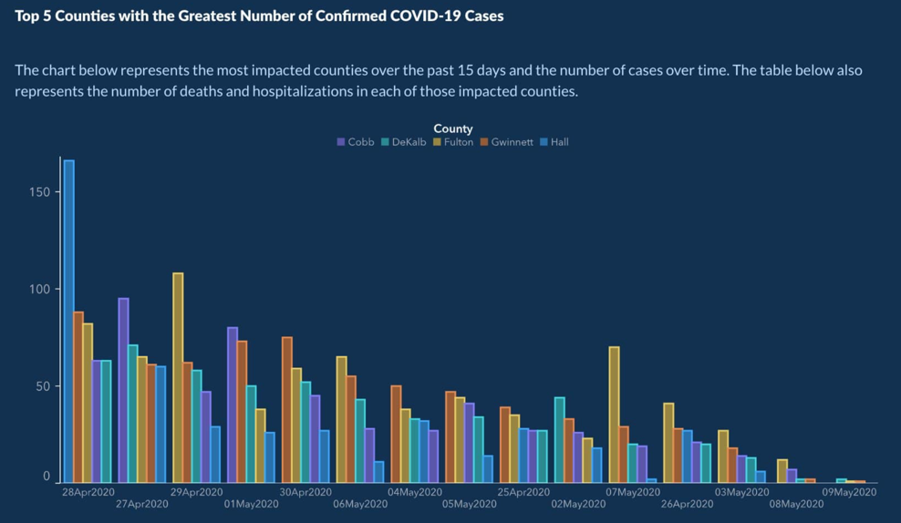

Source is Washington State Office: Data Breach Notifications Affectig Washington Residents (data/Data_Breach_Notifications_Affecting_Washington_Residents__Personal_Information_Breakdown_.csv). The raw file contains 6,600+ rows covering 2017–2024.
Four data points were modified. The 2018 count was raised from 35 to 52 to remove an early dip and fake a smooth upward trend from the start. The 2020 count was raised from 48 to 95 to hide the pre-pandemic plateau and suggest continuous acceleration before the 2021 spike. The 2022 count was raised from 173 to 265 ad 2023 from 164 to 290 to eliminate two consecutive year-over-year declines that would contradict the argument that there has been relentless growth in attacks.
Both CSVs are included: data/wa_breaches_cyberattacks_original.csv data/wa_breaches_cyberattacks_modified.csv
Hover any data point for detail: I applied three manipulation techniques.
1 - y axis starts at 30 instead of 0. 2 - False annotation at 2020 implies COVID infrastructure failures caused the surge 3 - Red gradient line color plays on emotion because red can be considered dangerous or alarming
Georgia Department of Public Health: COVID-19 Daily Status Report
Source is the Georgia Department of Public Health
Deceptions Used:: The x axis dates were placed in non-chronological order and
sorted by descending case count rather than by calendar date. It is very odd to have a time based x axis that is not
in chronological order. HEre the point was to make the bar chart look like covid cases were declining but the opposite
was actually true.

Georgia Department of Public Health: May 10 2020
Same approximate data in correct chronological order to show the # of cases were actually increasing.